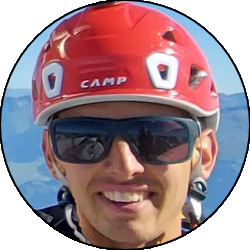
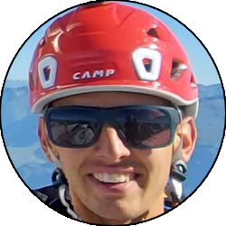

| Data Uscita |
05-02-2023, Mercoledì |
Area |
Grigne |
| Luogo di Partenza |
Passo Cainallo - Esino Lario (LC) |
Quota |
1300m la partenza
1719m il rifugio Bietti
2150m (circa) l'attacco del canale
2410m la cima
|
| Dislivello |
1200m (circa) |
Tempi |
7:00 ore (2:00 lo zoccolo più il canale) |
| Esposizione |
Ovest, Sud-Ovest |
Difficoltà Tecnica |
II+, 60° neve |
| Punti di Appoggio |
Bivacco 89a Brigata Poletti, Rifugio Bietti, Rifugio Brioschi, Rifugio Bogani |
Acqua |
Niente, solo ai rifugi (che potrebbero essere chiusi d'inverno) |
| Partecipanti |
 Carlo, Carlo,
 Gian, Gian,
 Maraja, Maraja,
 Oracolo,
 Simo Oracolo,
 Simo
|
(clicca sull'immagine per scarica la traccia GPS)
Accesso
Da Lecco prendere la SS36 fino all'uscita di Bellano. Portarsi verso la Valsassina e prima di Taceno prendere per Parlasco, e superato il paese a destra verso il passo di Agueglio. Percorrere tutta la strada con bei panorami sul lago, superando Agueglio ed arrivando a un ulteriore bivio al quale si prende a sinistra per Cainallo. Percorrere la strada fino a dove possibile, solitamente al Passo Cainallo, parcheggio a pagamento (colonnina presso il rifugio Cainallo).
Avvicinamento
Seguire la carrareccia che passa sopra alla pista da sci fino a quando si gira decisamente a sinistra ricollegandosi alla strada percorribile d'estate che porta fino al Vo di Moncodeno. Da qui salire nel bosco e poi proseguire in falsopiano fino al bivio tra Bogani e Bietti, dove si prende a destra per quest'ultima. Traversare tutto il versante Ovest della montagna (attenzione, possibile ghiaccio) fino a giungere dopo vari saliscendi fino al rifugio Bietti, oltre al quale si apre la conca del Releccio. Da qui proseguire per circa un chilometro o poco meno sul sentiero del caminetto, fino a un punto in cui i mughi si aprono e si è direttamente sotto alla parete Ovest, qui inizia lo zoccolo.
Via
Zoccolo: il percorso nella prima parte non è obbligato, ma seguire i migliori pendii puntando leggermente a sinistra fino ad inviduare un grosso sperone sotto al quale parte una comoda canaletta che porta rapidamente fino alle rocce strapiombanti che scendono dalla Piancaformia.
Da qui si traversa decisamente verso destra, prima comodamente, poi dopo un breve tratto verticale via via con tratti sempre più esposti (fare attenzione alla qualità della neve), tenendo come riferimento un torrione con la cima mozzata che divide il canale Ovest da quello di Sinistra. Giunti sotto a tale torrione si è all'attacco del canale vero e proprio, per il canale Ovest sarebbe necessario continuare a traversare invece.
Canale: si sale dapprima in una strettoia, per poi allargarsi sempre di più, il percorso è abbastanza obbligato a meno che si prendano varianti ai lati comunque decisamente meno logiche. Attenzione dopo circa 100m dall'attacco a non prendere l'invitante canale che sta dritto sopra, in quanto è la variante Zucchi (difficoltà maggiori), ma invece continuare a seguire la linea più logica portandosi a sinistra dove necessario, fino a un lungo scivolo finale dal quale sbagliarsi è impossibile.
Seguire lo scivolo senza grossi problemi fino all'evidente sella che esce sulla parte finale della cresta di Piancaformia. Da qui il rifugio è già visibile e in pochi minuti, verso destra, si raggiunge il Brioschi e la cima del Grignone.
Discesa
Seguire la classica e bellissima via della Ganda verso Nord, solitamente tracciata, se non lo fosse fare attenzione e tenersi sulla sinistra (pali indicatori se non sono coperti da metri di neve) poichè nella parte centrale son presenti diverse grotte e doline anche molto profonde. Arrivati nei pressi della madonnina del Bregai il percorso è meno obbligato e si scende per rado bosco fino al Rifugio Bogani, poi da qui ancora in discesa all'alpe Moncodeno. Da qui scendere traversando poco dopo verso sinistra (indicazioni) facendo attenzione ai canali soprastanti se molto carichi di neve, poi tramite un fastidioso tratto in salita ci si riporta fino al bivio Bogani-Bietti e da lì alla macchina per il percorso seguito all'andata.